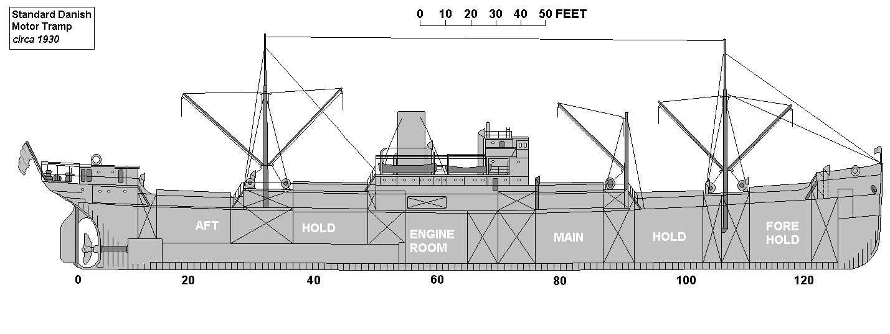
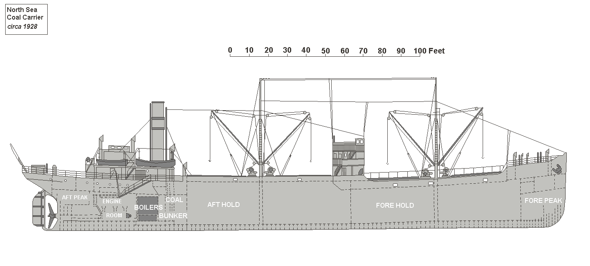

Ship Illustrations
Lubricating Oil diesel Tanker circa 1936
Re-drawn from an original contained in "Shipping Wonders of the World"
(artist unknown)
Dead-weight tonnage was around 10,310 tons.
Dimensions - 445ft. x 61ft. x 32ft
Power was by a four-cylinder Doxford opposed piston diesel engine - 3,000 bhp.
Last update - 28-Jan-2004
Standard Motor Tramp circa 1930

Re-drawn from an original contained in "Shipping Wonders of the World"
(artist unknown)
The design shown is of the "shelter-deck" type.
Deadweight tonnage of 9,200 tons approx. Total capacity of 569,600 cubic feet.
Dimensions - 422ft. x 54ft. x 28ft. approx.
Powered by a diesel engine such as the Doxford two-cycle opposed piston type.
Typical speed of 11 knots.
Last update - 24-Dec-2003
Standard Danish Motor Tramp circa 1930
Re-drawn from an original contained in "Shipping Wonders of the World"
(artist unknown)
The design shown is of the "long bridge" type.
Gross tonnage of 3,100 tons approx.
Dimensions - 326ft. x 50ft. x 20ft. approx.
Powered by a diesel engine of the four-cycle single-acting 6 cylinder type.
Typical speed of 10.5 knots.
Last update - 19-Jan-2004
North Sea Single-Screw Coal Carrier circa 1928
Re-drawn from an original contained in "Shipping Wonders of the World"
(artist unknown)
The vessel depicted is a typical "raised quarter-deck" type coal carrier.
Gross tonnage was around 2,301 tons with a grain capacity of 159,00 cubic feet.
Dimensions - 275ft. x 41ft. x 19ft
Power was by a triple-expansion steam engine.
Last update - 12-Jan-2004
Mediterranean Passenger Ship circa 1935
Re-drawn from an original contained in "Shipping Wonders of the World"
(artist unknown)
Gross tonnage of 9,000 tons approx.
Dimensions - 426ft. x 62ft. x 37ft. approx. Passenger accomodation for 470 approx.
Powered by single-reduction turbines giving 21 knots.
Last update - 16-Dec-2003
British Steam Coaster circa 1892

Gross tonnage of 400 tons approx.
Dimensions - 43.40 x 7.64 x 3.25 metres approx.
Powered by 2 cylinder compound steam engine.
Typical speed of 6 knots.
Last update - 04-Aug-2006